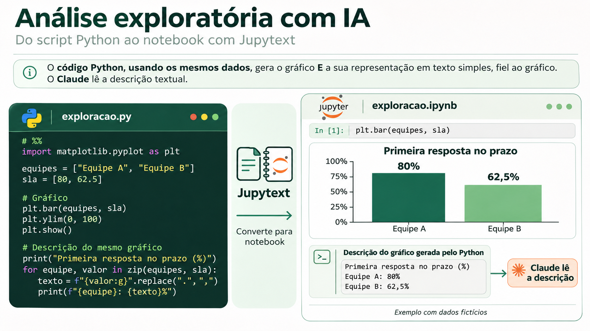

Análise exploratória com Jupytext
Na exploração de dados, eu trabalhava com o Claude em scripts Python e usava o Jupytext para revisar a análise e os gráficos no notebook.

Como eu revisava a análise
No notebook, conferia visualmente as distribuições e tendências antes de decidir o próximo recorte. A descrição trazia a métrica, os rótulos e os valores do gráfico para o Claude usar na etapa seguinte. Eu acrescentava as regras de negócio necessárias para interpretar o resultado.